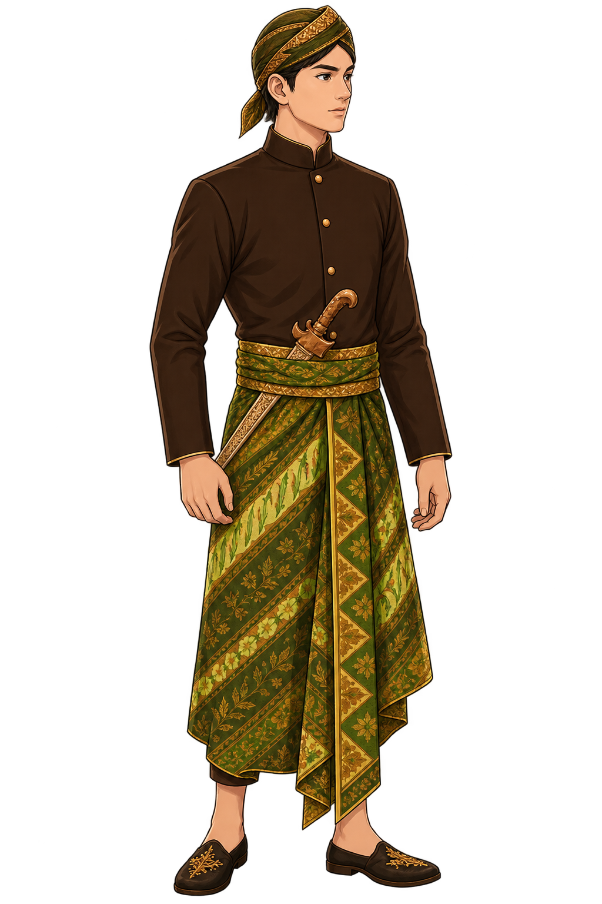

“Sawise metu saka Goa Jatijajar, Kamandaka nerusake
lampah menyang kawasan Batur Agung. Pegunungan lan
alas sing ngubengi dalan nggawe perjalanan dadi luwih
meneng. Dalan ing kene luwih akeh cabange, mula dheweke
kudu nggatekake tandha ing alam supaya ora salah milih dalan.”

07
10
Narator
“Sawise metu saka Goa Jatijajar, Kamandaka nerusake
lampah menyang kawasan Batur Agung. Pegunungan lan
alas sing ngubengi dalan nggawe perjalanan dadi luwih
meneng. Dalan ing kene luwih akeh cabange.”
Kamandaka
“Dalan ing kene luwih akeh cabange. Aku kudu
nggatekake tandha ing alam supaya ora salah milih
dalan. Aku ora kena kesusu.”
MEMASUKI WILAYAH BARU
Menentukan Jalan
Kamandaka tiba di persimpangan kawasan Batur Agung.
Beberapa jalan terbuka di hadapannya. Ia harus
memperhatikan tanda alam dan jejak perjalanan
sebelum menentukan jalan yang paling tepat.
TANTANGAN BASA 07
SINAU
BASA
Pelajari kosakata yang berkaitan dengan
perjalanan Kamandaka dan suasana
di Batur Agung.
BATUR AGUNG
“
Aku kudu nggatekake tandha alam
lan jejak sing isih jelas
sadurunge nerusake lampah.
KOSAKATA PENTING
Kenali kata-kata yang membantu memahami
perjalanan Kamandaka di Batur Agung.
01
TANDHA
TANDA
Kata untuk menyebut tanda atau petunjuk
yang diperhatikan dalam perjalanan.
02
DALAN
JALAN
Kata untuk menyebut jalan atau jalur
yang dilalui dalam perjalanan.
03
JEJAK
JEJAK
Kata untuk menyebut jejak yang masih
dapat digunakan sebagai petunjuk.
04
ATI-ATI
BERHATI-HATI
Ungkapan untuk mengingatkan agar tetap
berhati-hati dalam perjalanan.
TANTANGAN BASA 07
COBA
GUNAKAN
Pilih jawaban yang paling tepat berdasarkan
kosakata yang telah kamu pelajari.
PERTANYAAN 01 / 04
PERTANYAAN
Apa arti kata “Tandha”?
TANTANGAN CERITA 07
Jejak
Batur Agung
Setelah keluar dari Goa Jatijajar,
Kamandaka tiba di kawasan Batur Agung
dan menemukan beberapa cabang jalan.
Ia harus memperhatikan tanda alam,
jejak perjalanan yang masih jelas,
serta keadaan di sekitarnya sebelum
menentukan jalan yang akan dipilih.
✦
Mengamati Tanda Alam
Kamandaka memperhatikan tanda alam sebelum memilih jalan.
◎
Mengikuti Jejak
Kamandaka mengikuti jejak perjalanan yang masih jelas.
◈
Mengamati Sekitar
Kamandaka mengamati keadaan sekitar sebelum berjalan.
♧
Tidak Tergesa-gesa
Kamandaka tidak terburu-buru menentukan jalan.
Ingat langkah Kamandaka di Batur Agung.
Setelah itu, bantu dia memilih tindakan
yang tepat untuk meneruskan perjalanan.
07
08
✿
TANTANGAN CERITA 07
Jejak Batur Agung
Apa saja langkah penting Kamandaka
ketika menentukan jalan di Batur Agung?
ⓘ
Tarik
4 langkah yang benar
ke dalam kotak perjalanan.
Ada beberapa pilihan pengecoh.
LETAKKAN LANGKAH
PERJALANAN
Tarik 4 langkah yang benar
ke area ini
BABAK BARU DIMULAI
Jejak di
Batur Agung
Kamandaka telah menentukan jalan yang tepat
di kawasan Batur Agung dengan memperhatikan
tanda alam dan keadaan di sekitarnya.
Ia belajar bahwa perjalanan tidak boleh dilakukan
dengan tergesa-gesa. Setiap tanda dan jejak dapat
menjadi petunjuk untuk menentukan langkah berikutnya.
Perjalanan Kamandaka menuju tempat berikutnya
pun kembali dimulai.
“
Saben dalan nduweni tandha,
lan saben langkah nggawa Kamandaka
nyedhaki tujuan.